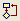
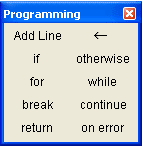

Programming Toolbar |
Programming operators are only used in programs and can be evaluated numerically or analytically. Click on the  button in the Math toolbar to display the Programming toolbar or choose Toolbars > Programming from the View menu.

| Programming Operators |
The Add line operator is the quickest way to start writing a new program.
| Tooltips |
To learn what each button does, hover the cursor over the button until a tooltip shows the title and a description appears on the message line of the Status Bar.
Note that the tooltips are only documented for US keyboards. The Mathcad Keyboard Shortcuts page may show the shortcuts for your language keyboard.